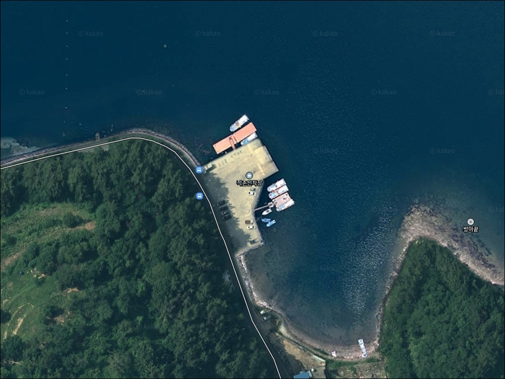
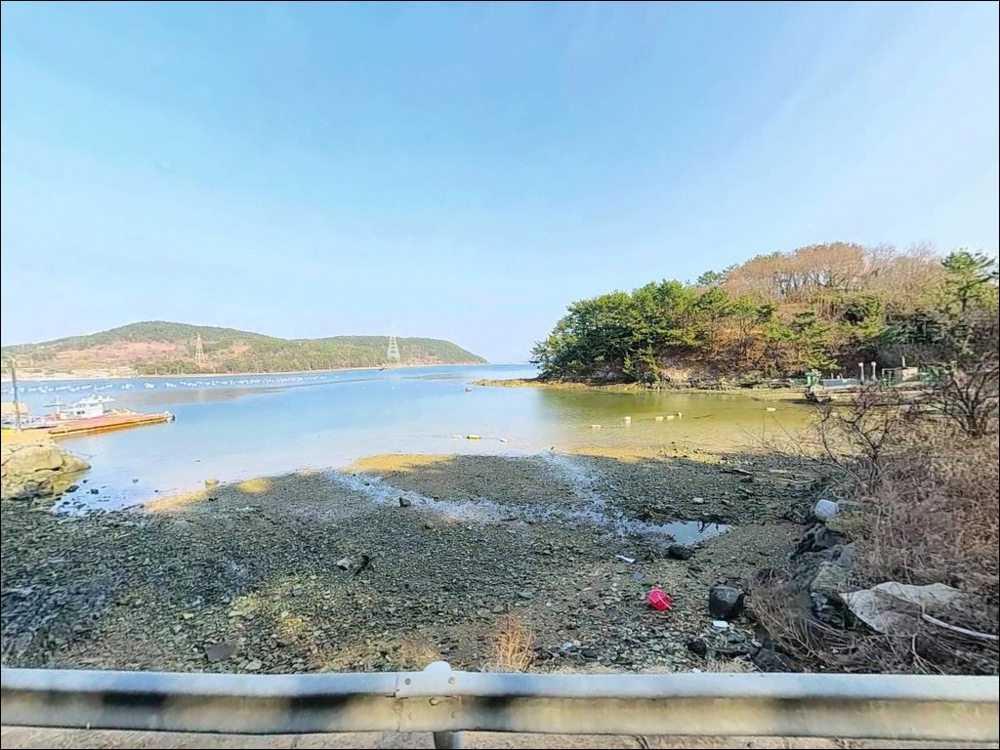
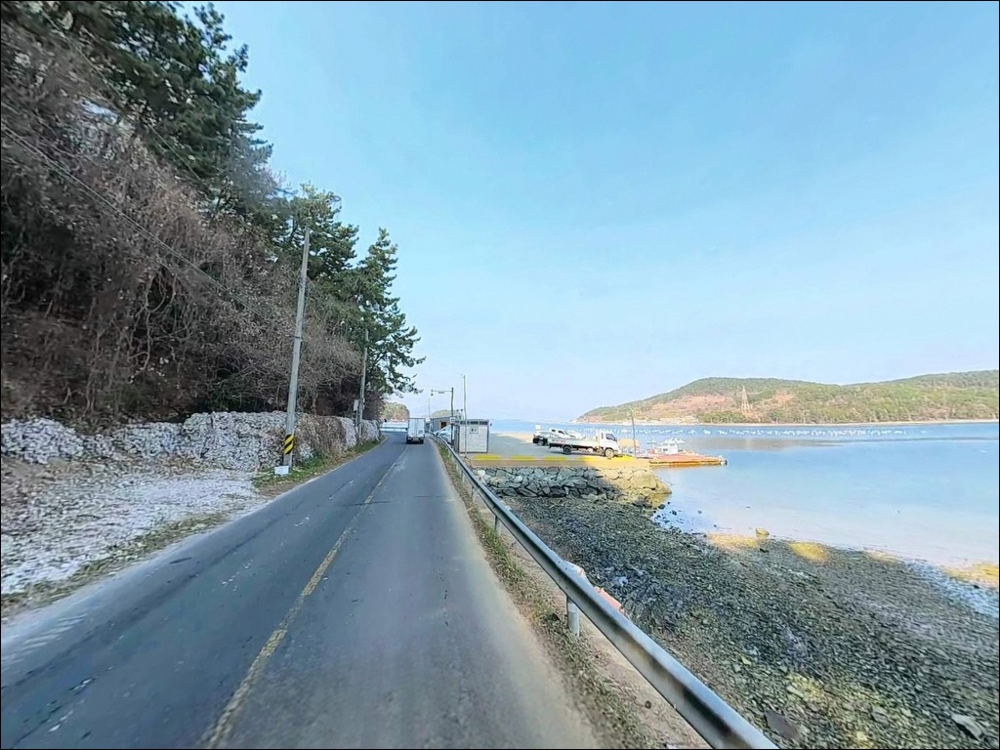
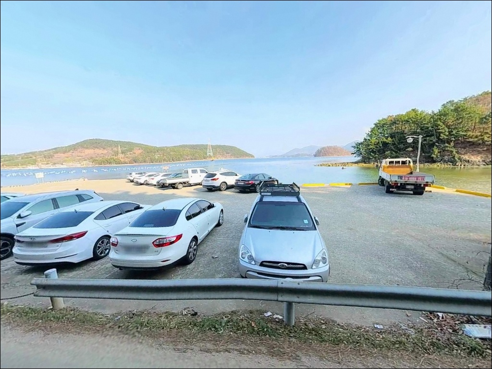
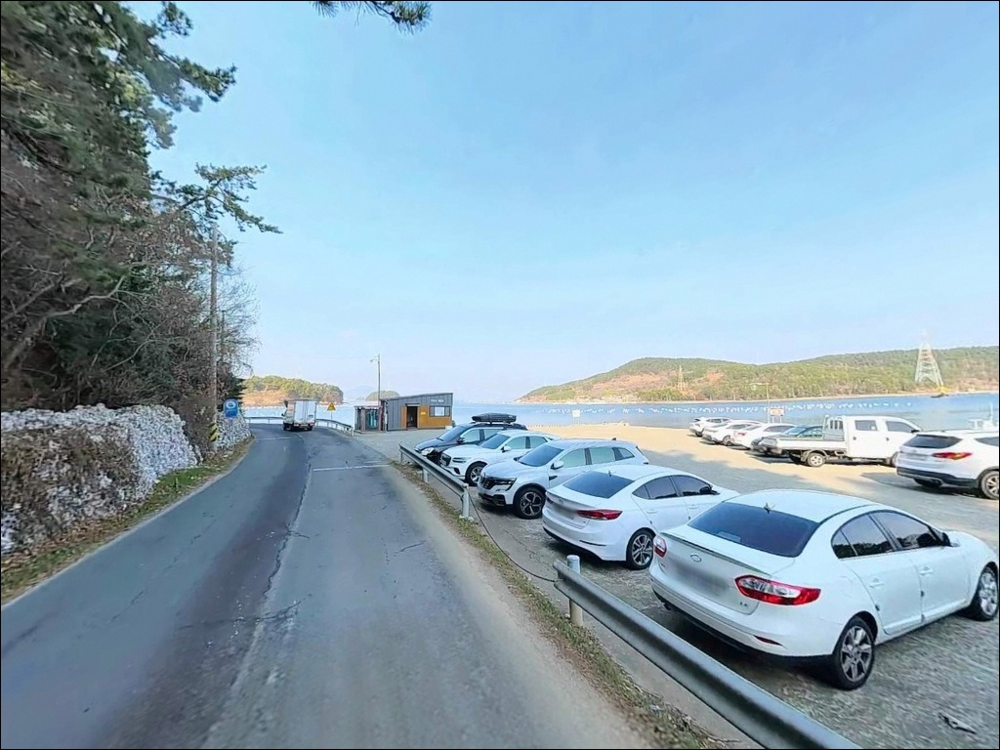
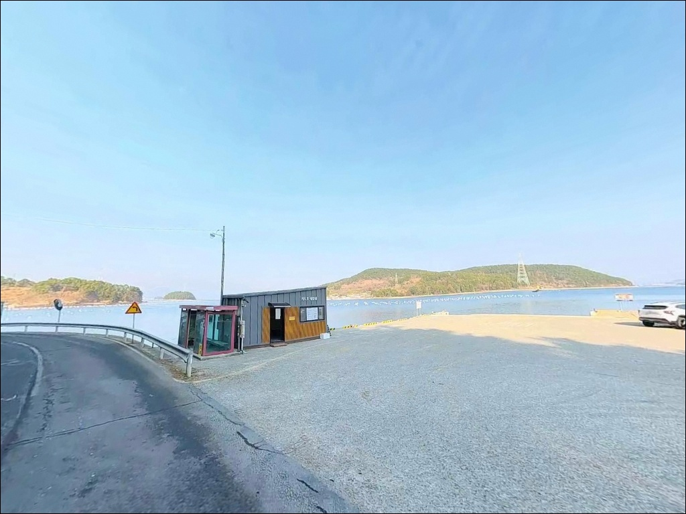
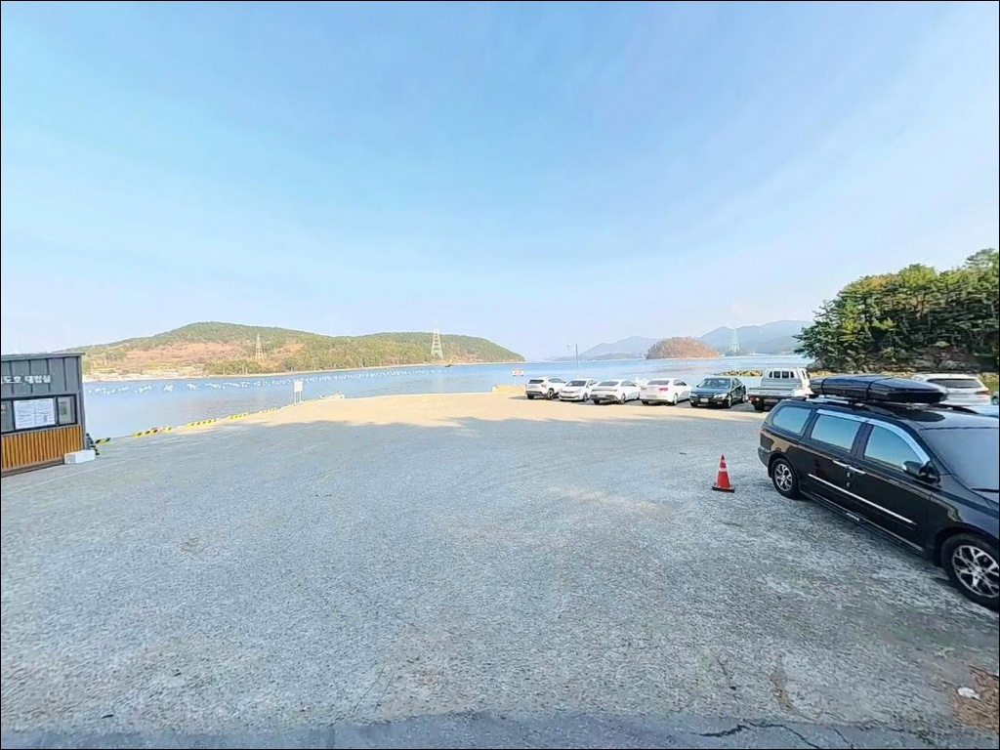
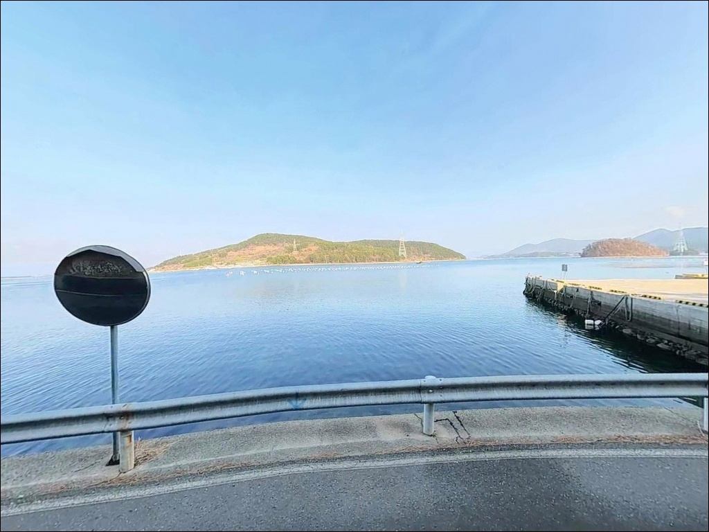
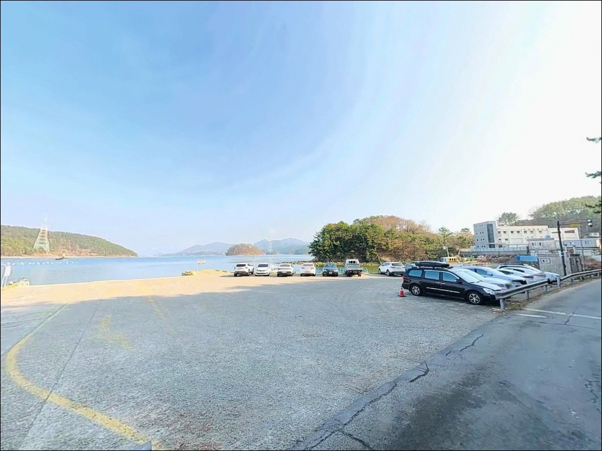

가벼운 봉돌 던졌다 날아간 채비, 통영 적촌선착장 원투낚시 30호 봉돌로 맞춘 조류
이 페이지에는 광고(제휴 링크 포함)가 있으며, 광고 링크를 통해 구매하면 운영자가 판매 수익 또는 수수료를 받을 수 있습니다. 포인트 사진: 카카오맵 스카이뷰·로드뷰. 이 페이지의 지도·사진 이미지는 카카오맵의 실제 서비스 이미지와 다를 수 있습니다.


포인트 안내
적촌선착장
경남 통영시 용남면 원평리 293-43
견내량 조류를 얕보고
가벼운 봉돌 채비로 적촌선착장에 진입하면,
캐스팅 직후 채비가 수로 방향으로 흘러
바닥 공략 자체가 불가능해집니다.
통영과 거제 사이 좁은 수로인 견내량은
조류 속도가 빠른 구간이며,
원투낚시에서는 30호 이상의 봉돌이
기본 조건입니다.
이 글은 적촌선착장의 진입 동선,
차박 여건, 견내량 조류 기반 낚시 전략에 집중합니다.
조황 단정이나 특정 어종 보장은
이 글의 범위에 포함되지 않습니다.

1. 진입 동선과 포인트 접근성
통영 시내에서 용남면 방면으로 나오면
원평리까지 해안도로가 연결되어 있습니다.
선착장까지 포장도로가 이어지며
급경사나 비포장 구간 없이 진입이 가능합니다.
마을 안쪽 구간은 1차선 수준의
좁은 도로가 이어지는 구간이 포함되어 있어
대형 차량이라면 진입로를
미리 지도로 확인하고 출발하는 편이 안전합니다.
선착장 앞에는 도선 이용객과 공유하는
무료 공터가 마련되어 있습니다.
5~6대 수용 규모이며,
도선 운항 시간대에는 이용 차량이 집중될 수 있어
주말 낮 시간대 방문 시 자리 확보에
여유를 두는 것이 좋습니다.
선착장 내부는 넓은 콘크리트 바닥 구조라
승용차는 물론 캠핑카도 회차가 가능한 수준입니다.
바다를 정면으로 바라보며
트렁크를 열어두는 방식의
차박 배치가 자연스럽게 가능한 구조입니다.

2. 차박 환경과 야간 체류 여건
적촌선착장은 견내량 수로를 정면으로 바라보는
탁 트인 조망이 특징입니다.
건너편 거제의 불빛과
거제대교 야경이 시야에 들어오는 구조라
야간 분위기가 나쁘지 않습니다.
선착장 내 가로등이 설치되어 있어
야간 채비 정비에 지장 없는 밝기가
유지되는 환경입니다.
적촌마을 민가가 선착장 인근에 위치해
완전한 고립형 포인트가 아닌
생활권 안쪽의 조용한 선착장 성격입니다.
차박 프라이버시 측면에서는
완전한 노지 수준을 기대하기 어렵지만,
도선이 운항하지 않는 야간에는
차량 통행이 거의 없어 수면 방해 요소는 적습니다.
내만 구조라 파도 소음이 거의 없는 편이며,
견내량 조류가 강하더라도
수면은 비교적 잔잔하게 유지됩니다.
낚시를 마치고 거제대교 야경을 바라보며
하룻밤 머무는 동선을 계획하는 낚시인에게
낚시와 숙박을 함께 운용하기에 충분한 여건입니다.


3. 주변 편의시설 및 인프라 현황
선착장 입구 인근에 공중화장실이 있어
기본 위생 여건은 갖춰져 있습니다.
반경 3km 이내 거제대교 인근에
식당가와 카페가 형성되어 있으며,
원평리 소재지 방면에
편의점과 소형 마트가 위치해
출조 당일 간단한 보급이 가능한 환경입니다.
통영 시내까지 약 10km 거리로
15분 내외면 닿는 위치입니다.
롯데마트 통영점과 이마트 통영점이
10km 권역 안에 있어
출조 전 식수·식량·낚시 소품을
일괄 준비하고 진입하는 방식이
가장 효율적인 보급 동선입니다.
응급 상황 시 통영시내 의료기관도
15분 내에 접근이 가능합니다.

4. 진입 전 반드시 챙겨야 할 준비사항
이 포인트 방문 전에 가장 먼저 준비할 것은
봉돌 무게입니다.
견내량은 통영과 거제 사이 좁은 수로로
조류 속도가 강한 구간이며,
원투낚시에서는
30호 이상의 봉돌이 기본 세팅입니다.
여분 봉돌을 충분히 챙겨야
채비 흘림 없이 바닥 공략이 가능합니다.
도선 운항 시간대에는 수로 방향으로의
채비 투입을 자제해야 합니다.
배가 접안할 때는 낚시대를 정리하고
어민 작업 동선도 미리 파악해두는 것이
기본 매너입니다.
야간 석축 구간은 해조류가 붙어
미끄러울 수 있으므로
갯바위용 신발 착용을 권장합니다.
내만 구조라도 갑작스러운 돌풍이
발생하는 경우가 있습니다.
출조 전 기상청 해상예보를 확인하고,
구명조끼는 선착장 낚시 전 과정에서
착용 상태를 유지하는 것이 원칙입니다.
어린이를 동반할 경우 수로 방향 추락 사고에
각별히 유의해야 합니다.

5. 견내량 조류에서 원투낚시 채비가 흘러버리는 이유
적촌선착장의 낚시 여건을 결정하는 핵심은
견내량 수로입니다.
통영과 거제 사이 이 좁은 수로는
썰물과 밀물이 교차할 때
조류 속도가 상당히 빠른 구간으로,
선착장 전방 수심은 5~8m 내외이며
강한 물살이 어군을 형성하는 환경을 만듭니다.
선착장은 일자형 방파제와
넓은 콘크리트 물량장으로 구성되어 있습니다.
테트라포트 없이 석축과 직벽 구조라
발판이 편안하고 이동이 쉬운 편이며,
선착장 끝단이 주요 낚시 자리입니다.
끝단에서 견내량 방향으로 캐스팅하면
수심이 일정하게 유지되는 구간에
채비를 안착시킬 수 있습니다.
사리 물때에는 어떤 채비를 써도
흐름을 버티기 어려운 수준까지 세집니다.
조금 물때 전후를 노리는 것이
이 포인트를 제대로 활용하는 방법이며,
봉돌 무게 선택과 물때 판단이
조과를 결정하는 두 가지 핵심 변수입니다.
출조 전 최신 조황은
반드시 검색해 확인하시기 바랍니다.


6. 포인트에 어울리는 낚시 스타일
이 포인트의 기본 낚시는 원투낚시입니다.
선착장 끝단에서 견내량 방향으로 캐스팅해
바닥을 노리는 방식이며,
도다리·보리멸·쥐노래미가
바닥 공략의 주요 대상 어종입니다.
봉돌 30호 이상을 기본으로,
조류 세기에 따라 추가 무게를 조정하는 것이
이 포인트의 원투낚시 기본 세팅 방식입니다.
에깅은 물살이 살아나는 타이밍에
갑오징어와 주꾸미를 노리기에 적합합니다.
견내량 조류 흐름이 생기는 구간을
활용하는 것이 효율적이며,
조금 물때에 선착장 끝단을 기준으로
조류 방향에 채비를 태우는 공략이 어울립니다.
야간에는 가로등 주변이
볼락 공략의 핵심 자리가 됩니다.
소형 지그헤드 루어를 이용해
석축 경계를 천천히 탐색하는 방식이며,
빛이 닿는 경계선이 볼락 반응을
끌어내는 조건입니다.
찌낚시는 조금 물때에 맞춰 운용하는 것이
이 포인트에서 현실적인 접근입니다.
사리 전후는 조류가 너무 강해
흘림낚시 컨트롤이 어렵고,
조류가 안정되는 타이밍에
선착장 벽면 수중여 부근을
흘림으로 공략하는 것이 감성돔 낚시에 적합합니다.

7. 대안 포인트와 플랜 B 동선
적촌선착장 주차 공간이 도선 이용객으로
가득 찬 상황이거나
조류가 너무 강해 낚시 여건이 여의치 않을 때는
견내량 선착장이 첫 번째 대안입니다.
적촌선착장보다 규모가 크며
조류를 더 직접적으로 받는 전문 포인트로,
원투·에깅 모두 운용이 가능합니다.
거리는 3km 내외입니다.
원평리 해안선을 따라 인접한
소형 방파제들도 대안으로 활용할 수 있습니다.
같은 내만 해역 조건이라
어종 패턴이 유사하며,
적촌선착장보다 한적한 환경에서
낚시하고 싶을 때 동선에 포함하기 좋습니다.
낚시와 차박을 동시에 업그레이드하고 싶다면
지도(紙島) 내부 캠핑장을 검토할 만합니다.
적촌선착장에서 출발하는 도선을 이용해
차량과 함께 입도가 가능하며,
전기·수도·취사·화장실이 완비된 캠핑장으로
노지 차박에서 시설 차박으로 전환되는
실질적인 업그레이드 옵션입니다.

물때와 봉돌 무게,
두 가지만 맞추면 달라지는 포인트입니다
견내량 조류를 활용하는 원투낚시나
에깅을 즐기는 낚시인에게
적촌선착장은 통영 시내와 가까우면서도
실전 낚시 조건이 갖춰진 포인트입니다.
견내량 방향의 조류 흐름은
어군 형성의 핵심 조건이지만,
봉돌 무게를 잘못 선택하면
채비 컨트롤이 불가능해지는 포인트이기도 합니다.
반면 도선 운항 시간대 주차 혼잡,
사리 전후 강한 조류,
마을 인접으로 인한
차박 프라이버시 제한은
미리 감안하고 가야 할 조건입니다.
물때 확인, 봉돌 준비, 진입로 사전 점검,
이 세 가지를 갖추고 간다면
통영 내만에서 만족도 높은 출조가
가능한 포인트입니다.
낚시를 마치고 거제대교 야경 앞에서
트렁크를 열어두는 차박 한 끼의 여유를
원하는 낚시인이라면,
통영 시내 접근성과 견내량 조망이 동시에 갖춰진
적촌선착장이 잘 맞는 선택입니다.